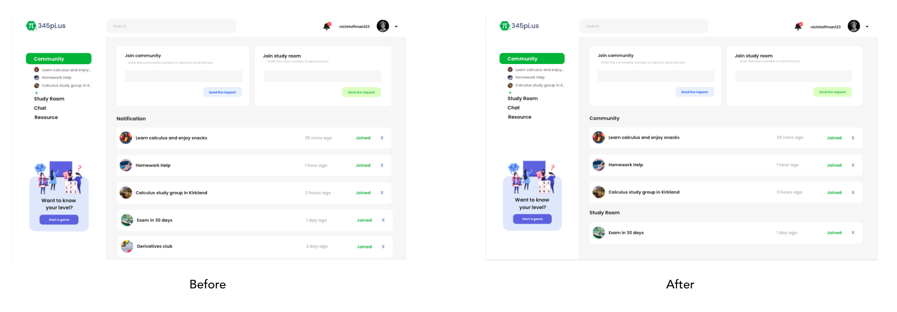

Challenges
Under covid-19, calculus learning class is zoom based, and the office hours become limited. Many students complained about that professor’s single mode of teaching by Zoom and less connection between peers and professors decreases the efficiency of calculus learning.
“Most calculus education creates fixed mindsets. Everybody can learn calculus if they have a growth mindset and collaborate.” wrote by Dr. Jo Boaler, the Neuroscience & Math Education Professor at Stanford University.
Business & Design Challenge
- B2C mode (This is not a product for school or other institutions to teach students calculus, but a platform to let students learn calculus in a better way.) - Startup company with limited resources.(MVP) - No plan to create the calculus curriculum. - Gamification
The initial design idea from my product manager is to create the gamified collaborative calculus learning web app, the mode is based on the mix of Duolinguo and Zoom. However, we figure out that creating our own calculus curriculum to teach is a huge work which cannot be done by a start up without math experts. The company also has no budgets on employing the calculus curriculum writer. Then, my PM asks me if I have any other solutions. I suggest to do the user research to define what users’ problems and needs now first.
Research
Mind Map

Neuroscience Research - The book "Limitless Mind" which is written by 345PI's advisor Dr. Jo Boaler pointed out that people limit themselves to be someone. A lot of U.S. white people rapidly give up when they face difficulties while learning calculus because they think they are not the right person. However, Asian and Indian students prefer to collaborative with each other when they solve the homework or create the study group to preview and review the knowledge together.
Hypothesis generation
• Simple and intuitive for the users to understand and use.
• One web app which should let students do multiple tasks.
• Students want to study calculus with like-minded people so that they are more likely to stick with them and get help.
• Many students only learn calculus the traditional way (ask the teacher if you have questions), and the teacher’s level and the difficulty of contacting them will directly affect their motivation to learn (Covid-19 accelerated it). Meanwhile, students lack access to know other online calculus learning resources.
• Students prefer to spend time and money understanding the Math/calculus concept is more important than getting the homework answer.
• Most Math symbols are not on normal keyboard, the math keyboard should be prepared.
User Interview and Persona
Conducting user research helps in understanding the user’s needs, experiences, behaviors and goals. Creating personas help to step out of ourselves. It helps to recognize that different people have different requirements and expectations, and also helps to identify for whom we are designing for. Qing, another product team member and I did 10 interviews with target users , we prepared 5 open end questions about their learning habits, satisfication, and complaints. We interviewed each candidate for 30 minutes.

How Might We
Pain Points & Insights
P: Cannot find people ask questions or review exam together.
I: Create a calculus learning community for students to ask questions and find someone learned together.
P: I found someone to study with, but we didn’t have a study place due to Covid-19.
I: Let students create study room and record their study time no matter the do online and offline learning. (Gamification)
P: I don’t understand the concept and my teacher/professor’s explanation, hope to learn it through other resources.
I: Users can recommend, grade, and comment on different type of learning resources such as digital textbooks, online course websites, apps, tutors and so on.
P: Typing mathematic symbols are painful while chatting (have to google search and copy&paste), it makes the communication hard.
I: The math keyboard should be designed.
After interviewing students, I got the idea which can avoid writing curriculum by ourselves but still let people learn calculus as a group. Instead of spending huge amount of time and money to create the curriculum during MVP phase, let users recommend, grade, and comment on different type of resources such as digital textbooks, online course websites, apps, tutors and so on.
Secondary Research
Design Principle
1. Responsive
Give immediate feedback that the input is received and something is happening. (spinner animation or “loading”)
2. Core functionality should be apparent
Functionality that is not fundamental to the product purpose should be ruthlessly omitted. (Core function - community)
3. Forgiving
Temporarily saving user input in case of disconnect
4. International, Compatible, Priority-focused
Basic User Flow
Wireframe
Style Guide and Inspiration
Color
While working to create a new colour palette I look at inspirations from 345pi competitors, Dribbble, Behance, and other online learning platforms. I created an Behance moodboard to collect and display my research. Creating the moodboard allowed the team and me to have a better understanding of what colour work well together.
Moodboard
font
Prototype
Design Iterations
While I was designing the notification page UX/UI of 345pi, I did some internal user testing with team members. Bryan, a software engineer found that figuring out the type of notification can be very challenging. My first draft group community and room notification together. For users, they will feel hard to identify from name. I had to rethink how I wanted to make the information clear.
In my second attempt, I tried to group them separately. And I asked my team members again, they told me that the second one helps them find the information quickly.
Data Visualization
In order to improve the user experience of web site, increase the interaction and visual sex, I suggested to team that will be displayed in the “project introduction” originally on the page table to interactive maps, I wrote a piece of code to visualize data (HTML/CSS/js), so that users can through the movement of the mouse and color change of intuitive aware of the American mathematical level in the world.
Reflection
Collaboration
Creating a 345pi Web application is a great opportunity. This was my first big project as a UX/UI designer, and I was honored that my team members were very friendly and responsible. Remote work didn’t make communication difficult for us but gave everyone more freedom and flexibility.
Learning Opportunity
While sitting with the developers and product/market team, I was able to learn how they balance the technology problem and financial problem. Working with the developers was a great learning experience because I was able to understand how they combine database and back-end development.
Overcoming Doubt
I had some doubt throughout this project that maybe users wouldn’t want a place to communicate. They probably just want to get the homework answer asap. However, I overcame that doubtfulness while doing user interviews, many users told me if they only want to have the answer, they will just google search or use Quizlet/Chegg. They don’t want to pay for these products because they don’t really teach them or let them have fun. The result also makes me know that what I thought does not mean what users thought. What we were doing was giving them the option to have a more personalized learning experience by offering a community platform and resources.